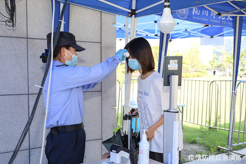
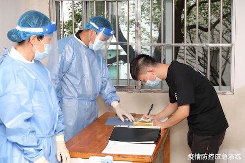

学校召开疫情防控工作部署会
1.严格管理。校内师生员工凭有效证件（学生证、校园卡、工作证）从南大门进出，其他校门暂时关闭，主动配合登记、测温。校外车辆与人员不得进入校园，保障等特殊情况提前与职能部门联系，保卫处备案（电话28867110）。校内公共场所暂时关闭、暂停外借。
2.配合防控。学校已经启动疫情防控预案，请广大师生员工积极配合排摸、测体温、隔离观察等工作，主动报告与重点地区等相关人群接触与否、进出学校信息、体温检测等具体信息，以“细、严、实”的要求，认真落实防控措施，保证自身和家人安全。
3.积极防护。全体师生员工要进一步提升自我防护意识，假期尽量减少外出，不参加集聚性活动，如确实要外出必须佩戴口罩，咳嗽捂口鼻，勤洗手、勤通风、做好个人清洁卫生，积极配合学校或所在地做好防控工作。
4.严控活动。根据疫情形势和防控要求，对拟开展的各类会议、论坛、讲座、培训等一律取消或顺延。对个别确需开展的活动，必须经学校防控工作领导小组同意，并落实疫情防控工作方案后方可举行。
5.延期开学。按照上级主管部门要求，学校将延期至2月17日以后开学，具体时间根据疫情和上级主管部门通知另行通知。教务处、学生处、研究生院、国教院等就学生报到、注册、缓补考、上课等制订相关应急方案。
6.提前报备。寒假期间，除已留校生外的师生做到不离家、不提前返校，如极其特殊情况一定要返校，必须由所在单位向学校防控办（公管处）报批，保卫、后勤、卫生等部门按照规定要求审批报到时间方可。经批准返回后须居家隔离或定点医学观察，落实“一人一间”，每天测量体温，接受医务人员问询。
7.隔离观察。有重点疫情地旅行史、生活史、与当地人接触史，或与其他地区确诊病例、疑似病例密切接触者，为了家人朋友安全，请务必自觉居家观察14天，主动联系所在社区，主动配合学校各单位联系人跟踪随访。如出现发热、乏力、咳嗽、呼吸道等不适症状，请及时报告社区和学校所属单位部门。